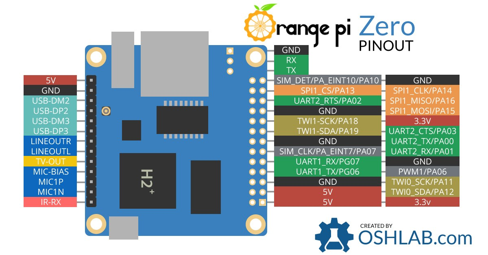

GPIO-Python
OPI.GPIO
一个替代RPI.GPIO的库。
安装
sudo pip install --upgrade OPi.GPIO
API文档
加载模块
import OPi.GPIO as GPIO
这样做之后，你就可以在你的脚本里使用GPIO了。
引脚定义
为了兼容RPI.GPIO，这个库按SUNXI的命名方式添加了第三个编号系统。
基本用法
import os
import sys
import OPi.GPIO as GPIO #加载模块
GPIO.setmode(GPIO.SUNXI) #以全志命名方式（另外还有 GPIO.BCM 和 GPIO.BOARD）
GPIO.setup("PA01", GPIO.OUT) #设置PA01为输出
#输出:
#设置高电平:
GPIO.output("PA01", GPIO.HIGH)
# or
GPIO.output("PA01", 1)
# or
GPIO.output("PA01", True)
#设置低电平:
GPIO.output(12, GPIO.LOW)
# or
GPIO.output(12, 0)
# or
GPIO.output(12, False)
#输入:
GPIO.setup("PA02", GPIO.IN, pull_up_down=GPIO.PUD_UP) #上拉 3.3V (pull-up)
# or
GPIO.setup("PA02", GPIO.IN, pull_up_down=GPIO.PUD_DOWN) #下拉0V (pull-down)
if GPIO.input("PA02"):
print('Input was HIGH') #如果是true则高电平
else:
print('Input was LOW') #如果是False则低电平
while GPIO.input("PA02") == GPIO.LOW:
print('Input was LOW')
#清理管脚，结束程序时最好清理一下，防止意外。
#清理指定管脚
GPIO.cleanup("PA01")
GPIO.cleanup( ("PA01", "PA02") )
GPIO.cleanup( ["PA01", "PA02"] )
#清理所有管脚
GPIO.cleanup()
更多信息可参照：
https://github.com/rm-hull/OPi.GPIO
文档：
https://opi-gpio.readthedocs.io
pyA20 for A20/H2/H3
安装
git clone https://github.com/dneyirp/OrangePi_GPIO_A20_H3.git
cd OrangePi_GPIO_A20_H3
python setup.py install
使用
import os
import sys
#加载导入模块
from pyA20.gpio import gpio
from pyA20.gpio import port
gpio.init() #初始化GPIO
gpio.setcfg(port.PA01, gpio.OUTPUT) #配置输出
gpio.output(port.PA01, 1) #设置高电平
gpio.output(port.PA01, 0) #设置低电平
gpio.setcfg(port.PA01, gpio.INPUT) #配置输入
#上拉或下拉
gpio.pullup(port.PA01, gpio.PULLUP)
#gpio.pullup(port.PA01, gpio.PULLDOWN)
if gpio.input(port.PA01) == 0: #由于是上拉，结果反转(做按钮)
print('Input was HIGH') #如果是0则高电平
else:
print('Input was LOW') #如果是1则低电平